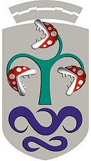
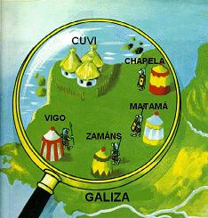

CUVI
 De: La Frikipedia, la enciclopedia extremadamente seria.
De: La Frikipedia, la enciclopedia extremadamente seria.
| De la serie ciudades del mundo:
|
| CUVI
|
| {{{bandera}}}
|

|
| (Bandera)
|
(Escudo de armas)
|
|
| Topónimo oficial
|
Ciudad Universitaria Viguesa Independiente
|
| País
|
El propio
|
| Código postal
|
1
|
| Superficie
|
Toda
|
| Altitud
|
La propia
|
| Distancia
|
Cerca de Vigo Memorial
|
| Fundación
|
65000000 AC
|
| Población
|
Depende de las huelgas de Vitrasa
|
| Gentilicio
|
|
| Alcalde
|
XTANOMATO
|
Mundialmente conocido, la Ciudad-Fortaleza del CUVI (Ciudad Universitaria Viguesa Independiente), es la 3ª ciudad-estado más poderosa del Mundo, después de la República Revolucionaria de Mercadona y Marina D'Or (ciudad de vacaciones). El CUVI está asediado desde tiempos inmemoriales por Vigo, pero resistió y aún resiste al invasor.
Gobernado por la superpotencia mundial conocida como Universidad de Vigo, el CUVI ha llegado a ser lo que es hoy gracias a los universitarios que, atraídos por sus grandes atractivos turísticos y sus leyes pseudo-fascistas-franmasónico-liberales y su generalizado ambiente megalómano friki, decidieron emigrar desde sus anteriores lugares de residencia para disfrutar de un paraíso exótico, con microclima propio y una fauna y flora sin igual.
El CUVI está dividido en unidades sociopolíticas con gobierno autónomo y de régimen variable, llamadas facultades o escuelas, entre las que se reparten los universitarios según su nivel intelectual, sus hábitos alimentarios y su frikismo.
Historia
 Vista aérea del CUVI (cortesía de Guguelé)
El CUVI fue fundado hace 65 millones de años por dos ingenieros y dos licenciados superiores, beatificados hace tiempo por la Conferencia Episcopal, y que responden a los nombres de San Teleco, San Pepe, San Isidoro (de Sevilla para más señas) y San Alberte.
Estos cuatro caballeros unieron sus fuerzas y su pericia para crear un universo paralelo y utópico en el que no hubiera guerras, ni enfermedades y todo el mundo fuera feliz. Desgraciadamente, fracasaron y así surgió el CUVI. Cada uno edificó una facultad, y se dedicó a transmitir sus enseñanzas con la mejor voluntad posible. Lamentablemente, aquello no podía durar, y la armonía del CUVI en su era primigenia fue destruida con la llegada del Hippismo Costrista y Bill Gates. Estos factores corrompieron a los universitarios hasta el punto en que se enfrentaron entre sí en la 1ª Guerra Cuvil. Tras una suerte de innumerables batallas, montones de suspensos y miles de créditos malgastados, cada una de las 4 facultades existentes hasta la fecha se aisló de las demás, quedando si bien una exigua camaradería entre Industriales y Teleco.
Desde entonces, cada facultad y sus estudiantes son vilipendiados por las demás, llamándose frikis a telecos e industriales, chumados a los científicos marinos, y reintegratas a los de la FFT.
Desde entonces, han ido apareciendo nuevas facultades, aunque de momento ninguna con tanto carisma como las fundadoras, pero pugnando por hacerse un sitio en el CUVI, y quién sabe si algún día nos darán una sorpresa...
Facultades
De momento se conocen seis facultades o escuelas:

El malvado
M.V.V. (en el centro), con sus subordinados (representación figurativa)
- Escuela Técnica Superior de Ingenieros Industriales: Su sistema de gobierno es el Piñeirismo, pero los departamentos tienen su propio régimen. En realidad, quienes mueven los hilos son los acólitos del temido DTE. Además, se rumorea que en las oscuras catacumbas del edificio (en las cuales se pudren cientos de alumnos perdidos) habita un ser cuya malicia no tiene limite y su nombre, de iniciales M.V.V. ("Most Valuable Vulumen"), causa horror en el alumnado. Aquellos valientes que se han atrevido a adentrarse es sus dominios han experimentado en sus traseros su terrorífico efecto "cilindro-pistón". Industriales produce Terminators y Robocops
- Escuela Técnica Superior de Ingenieros de Telecomunicaciones (Powered by Teleco Inside™). Teleco produce Caballeros Sith, Smithermans y Furciómetros. La facultad de Teleco destaca principalmente por su tejado rojo y su desnivel, causado por la ineptitud del arquitecto
borracho drogado conocido por ser el monigote del Monopoly que posteriormente fue violado por los despojos sociales estudiantes de Ciencias jurídicas y del trabajo. El techo de los pasillos está hecho con los espaguetis sobrantes del comedor de la facultad de Minastirith, y sirven de ofrenda a Dios, que proteje la autonomía e independencia de Teleco y evita que los telecos aprueben para que puedan seguir dedicandose a la vida del estudiante. La frase que define a Teleco es: Teleco es como una empanada. Si no picas cebolla bien finita, no puedes aprobar Teleco...
- Facultad de Ciencias / Hogar de Acogida de Chumados: Culmen de la teoría siempre abucheada del "Hippismo Costrista" se hacen fuertes en su Magosto, en el cual no saben cuánta bebida comprar para satisfacer los gaznates de esta insigne facultad!Ciencias del Bar produce Vagos
- Facultad de Filología y Traducción (Codename FFT): . Dominada en la sombra por los Caballeros Reintegratas y el Consejo de los Maestros Agal, liderado por los insignes y nunca suficientemente ponderados Óscar Diaz Fouces, Carlos Garrido y JHPR, así como último refugio y fortaleza del lado luminoso. Desprestigiada y odiada por los de Ciencias debido a, según ellos, su poco valor académico, es, sin embargo, una de las mayores fuentes de tías de la Ciudadela. Traducción produce Reintegratas.
- Facultad de Ciencias Juridicas y del Trabajo: Habitan dos especies: La de derecho mercantil y la de relaciones laborales (si no vales no vales), considerada por los primeros, como la de los gitanos muertoshambre de la facultad. Esta facultad produce fuertes cantidades de Niño Pijo & Generaciones Peperistas, y las piezas defectuosas se convierten en frikis, despojos o meramente en parias a los que reeducar,adictos al café en la cafetería de la facultad(nunca mejor dicho). Servido por mujeres que siembran la duda. En esta facultad habitan especímenes muy peculiares. Mientras que por la mañana suelen aparecer los tíos con jersey alrededor de los hombros, náuticos, polos y dockers (ya que todo pantalón chino lo denomina por una marca que no muchos no alcanzamos a pagar), y los tíos de las corbatas (ideales para que sean abruptamente ahogados),por la tarde suelen aparecer ejemplares de Rojo Mancillador, con sus hordas comunistas,y es muy posible que te encuentres al Señor Butrul. Además, las veladas de tarde, se ven amenizadas con las rimas burdas y amenazantes de Fat Joe. Cabe destacar que por la mañana, el nivel femenino está muy alto, si te gustan las niñas de Rajoy, éste es tu sitio!! Como popularmente es conocido por los seres no encuadrados en las Legiones Peperas, La Facultad es un Hervidero de Chochitos.Ciencias jurídicas y del trabajo produce Pijos con bufandas en el culo y Rojos Mancilladores.
- Facultad de Ciencias Económicas: Una facultad de las mas nuevas e interesantes por el alto numero de féminas que habitan dentro de sus muros, normalmente con un alta tasa de porción corporal al aire. Es decir, casi como Diox las trajo al mundo. Una vez dicho lo mas importante hablaremos sobre las dos especies que viven en esta facultad. Primero están los hacinados de Empresariales, que son como orcos en una batalla y después están los de económicas, la verdadera calidad de esta facultad (aun teniendo menos jamelgas, están más buenas).
Festividades Locales
El CUVI es, ante todo, un sitio al que los universitarios van a pasar el día, y por tanto debe ofrecer diversas actividades culturales para el esparcimiento de los susodichos. Así, durante algunos días del curso, se planean con más o menos cuidado una serie de fiestas que son el orgullo de la Ciudadela.
- San Teleco: día de festividad por excelencia (aún nadie sabe como). Se celebra sobre el 10 de Noviembre, dependiendo de factores como la posición del sol, el número de organizadores (en descenso), etc. Se llevan a cabo diferentes actividades lúdicas como beber y fumar hasta caer de culo o torneos de futbolín en los que nadie ve las bolas.
- San Alberte: Día de la festividad de ciencias, que se celebra a mediados de noviembre, normalmente bajo una intensa lluvia.
- San Pepe: Día de festividad de Industriales, la única que iguala a San Teleco en todo (y además con mejor clima),se rumorea que una oscura tradicion cuvil cita que aquel que consiga bajar a rebolos desde la plaza central hasta el edificio de industriales conseguira hayar un magnifico tesoro, de ahi los habituales intentos que se suceden en este dia, solo realizados por los mas intrepidos .
- San Vicente: Día de la festividad de Ciencias Económicas y Empresariales donde se emula San Teleco y toda su grandiosidad.
- San Pepito: Sucia y pobre imitación por parte de los inferiores seres que habitan en Peritos, en la que pretenden "emborracharse" y jugar al Bingo.
- San Mineco: Festividad fruto de la unión de unos cuantos mineros y la total y absoluta ausencia de comité organizador de San Teleco 2006. Los mineros aprovecharon la ocasión para tener por primera vez una festividad propia.
- San Isidoro: Fiesta de la facultad de filología y traducción (más conocida como FFT). Fiesta friki donde las haya, ya que se organizan, sesiones de micrófono abierto, campeonatos de trivial y pro y conciertos de grupos que no los conoce ni su madre.
Transporte
La Ciudadela está comunicada con la ciudad de Vigo a través de cinco líneas secretas de Vitrasa, como la Rianxira 1 y 2 (denominadas Vai-vem 1 e 2 por los reintegratas, porque estas líneas secretas van y vienen), la tuneada linea 8, el 15C y el misterioso R.
Vídeos
Autor(es):
- Nexo
- Fordus
- Ultrapuerco
- MURO DE AGUAS
- Aque
- Azulejos
- El Sevillano
- Muro Bot
- Freedirect
- Currupipi
Frikipedia 2005-2016, Licencia
GFDL 1.2 - Extraído por FrikiLeaks